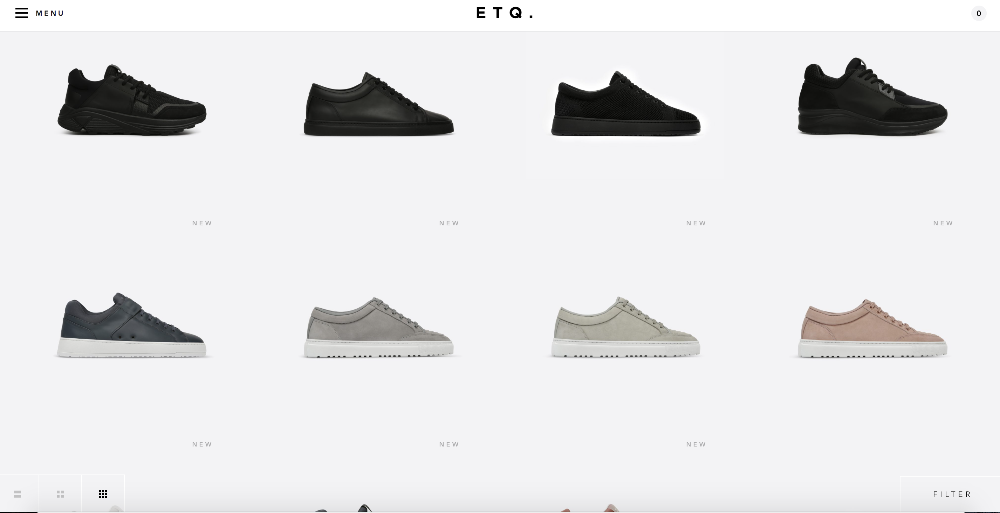
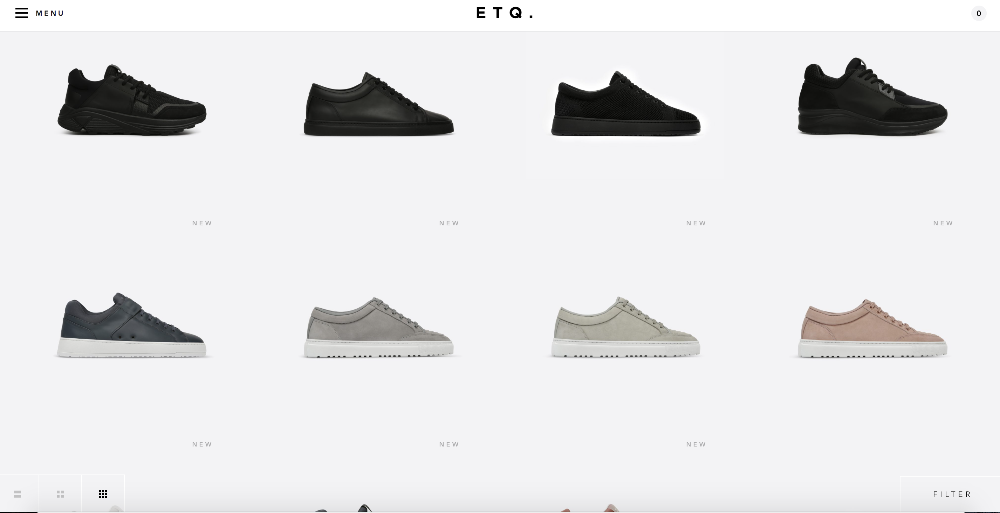
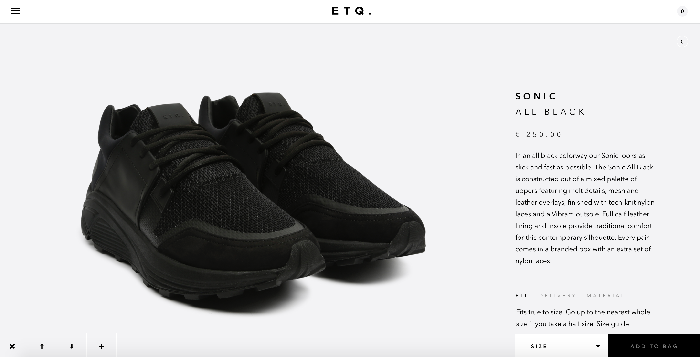
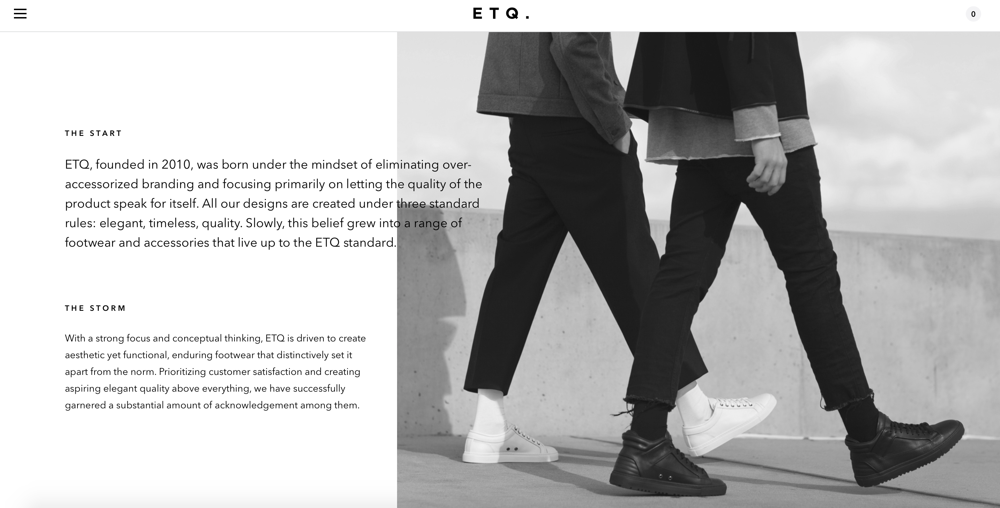
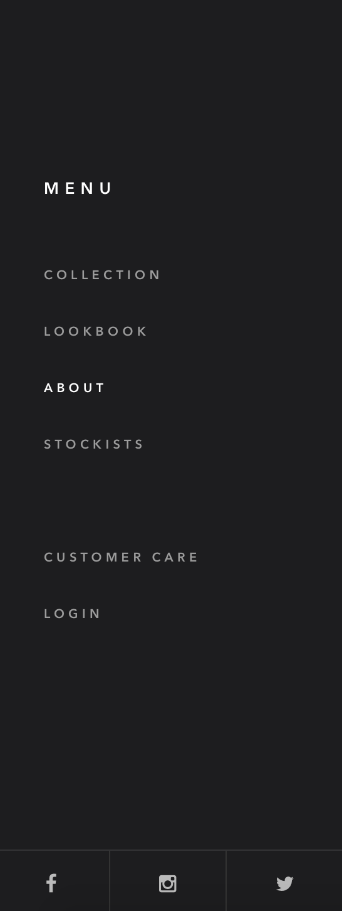

start exploring
ranking

ETQ is a footwear brand that aims to provide functionality in its products. Their line of footwear and accessories are simple, seasonless and monochromatic. All of their designs are created under three standard rules: elegant, timeless and quality. Their digital experience is characterized by smooth and easily understandable animations. The products are the main features and the site has a minimal black and white color scheme, and legible, clean typography.
ETQ's website is clean, minimal and modern. Their images are large and clear which allows you to see all details of their products. The website has smooth transitions between different content and they do not bombard you with prices, adverts or cheesy jargon about sales and discounts. The site is sleek and elegant, especially through its black and white color scheme. The site is also very easy to navigate, which can be attributed to its minimalistic layout. My favorite part of the site is how they display their products. They show the products at numerous angles, and instead of a clickable image gallery the site has a continous scroll that allows you to scroll through images of the product while the information about them remains fixed on the right.
On their homepage where they display all of their products, hovering over each product only displays their names and not their prices. You have to click on the product to find out its price. There is no search box. They only have a "Filter" option. Therefore if you are looking for a specific shoe, you have to select all features of the shoe in "Filter" to look for it. The "Filter" tab is also at the bottom right corner, instead of at the top. This makes it quite hard to find for users.
Their Products
The Filter tab is all the way at the bottom of the page, in an unobvious color.
 

Product View - clear, large images.

Cool scrolling effect on the product view pages.
The About Page
Menu Navigation
